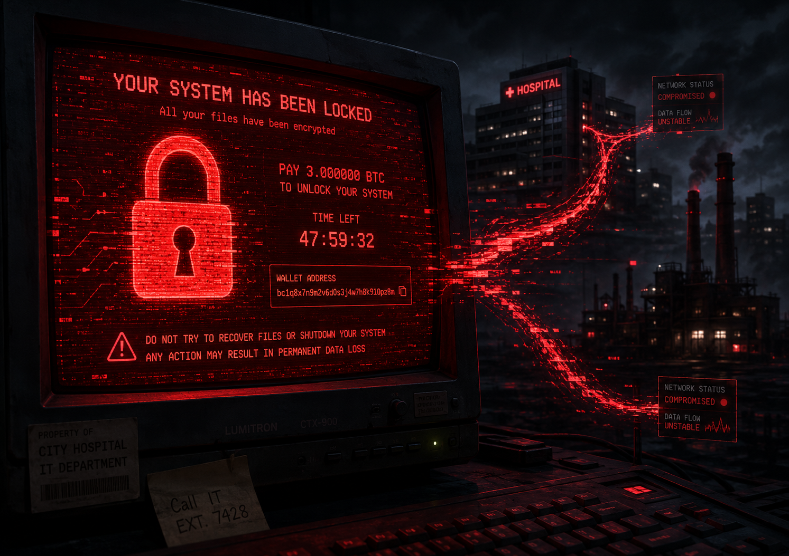
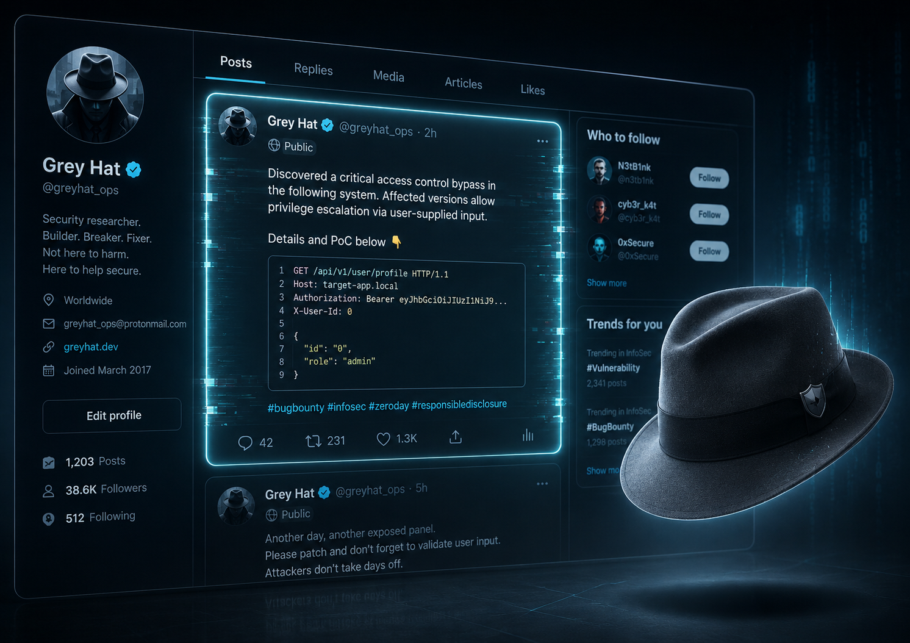
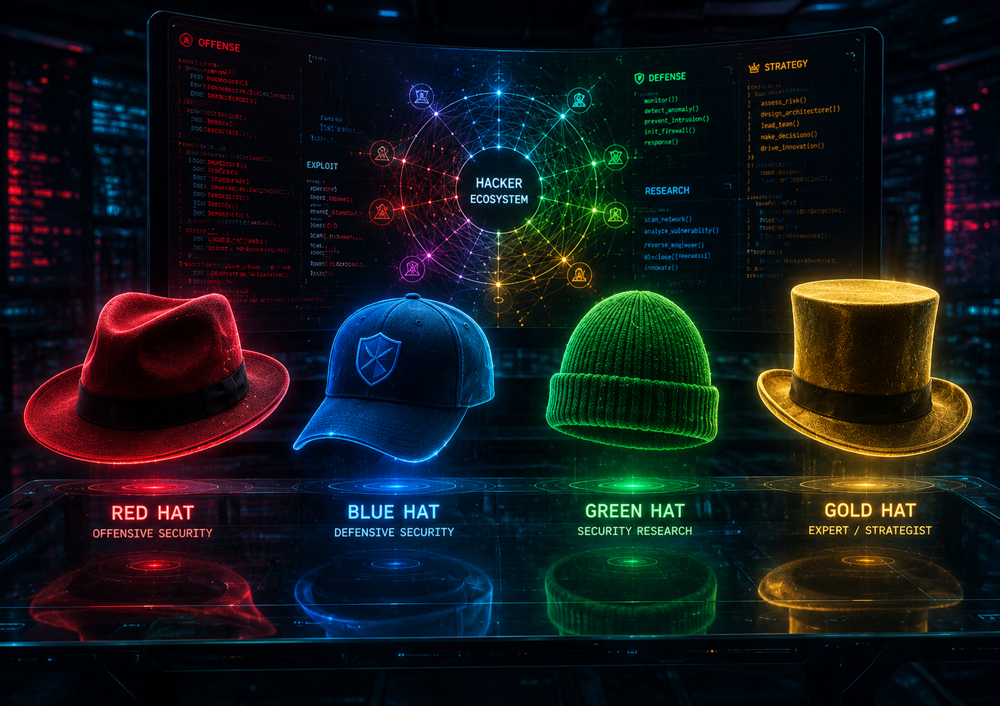
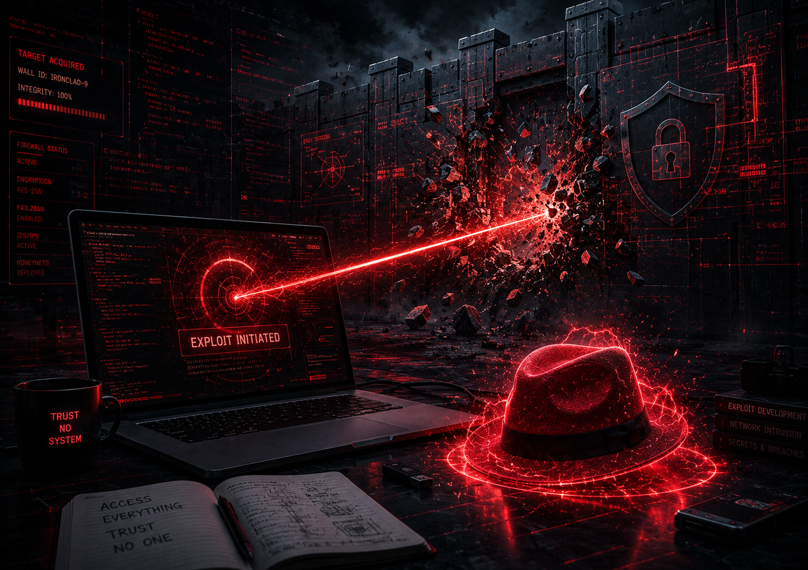

Теория классификации хакеров лучше всего усваивается через реальные истории. Киберпространство помнит сотни громких инцидентов: одни привели к миллиардным убыткам, другие спасли жизни, а третьи заставили корпорации пересмотреть свои взгляды на безопасность. Давайте разберем несколько ярких кейсов и посмотрим, какие именно «шляпы» стояли за этими событиями.
РЕАЛЬНЫЕ
КЕЙСЫ
ПО СЛЕДАМ ХАКЕРОВ:
ИСТОРИИ ВЗЛОМОВ, ИЗМЕНИВШИХ МИР
КЕЙС 1
Угон автомобиля на скорости 110 км/ч
Тип хакеров: White Hat (белые хакеры)
Год: 2015
Что произошло: два ИБ-исследователя, Чарли Миллер и Крис Валасек, решили проверить безопасность современных автомобилей. Они выбрали джип Jeep Cherokee и обнаружили уязвимость в его мультимедийной системе, подключенной к интернету. Журналист издания Wired согласился стать «жертвой». Пока он ехал по трассе со скоростью 110 км/ч, хакеры, сидя с ноутбуком за километры от него, смогли удаленно включить дворники, музыку на полную громкость, а затем... отключили тормоза и заглушили двигатель.
Последствия и смысл: автомобиль оказался в кювете (без пострадавших). Это была легальная и заранее спланированная акция. Автоконцерн Chrysler получил полный отчет об уязвимости и экстренно отозвал 1,4 миллиона автомобилей для обновления прошивки. Своими действиями эти белые хакеры предотвратили реальные катастрофы, которые могли бы устроить террористы.
КЕЙС 2
Эпидемия вируса-вымогателя WannaCry
Тип хакеров: Black Hat (черные хакеры)
Год: 2017
Что произошло: в мае 2017 года мир столкнулся с беспрецедентной кибератакой. Злоумышленники выпустили в сеть вирус WannaCry, который использовал уязвимость в Windows. Попадая на компьютер, вирус шифровал все файлы пользователя и требовал выкуп в биткоинах (от 300 до 600 долларов) за ключ расшифровки. Вирус распространялся сам по себе, заражая машины в одной сети.
Последствия и смысл: за несколько дней было заражено более 300 000 компьютеров в 150 странах. Под удар попали заводы автомобильных гигантов, логистические компании и, что самое страшное, система здравоохранения Великобритании - больницы не могли принимать пациентов, так как базы данных были заблокированы. Ущерб составил миллиарды долларов. Это классический пример работы «черных хакеров», чья цель - финансовая нажива и дестабилизация инфраструктуры, несмотря на человеческие жертвы.

КЕЙС 3
Взлом страницы Марка Цукерберга
Тип хакеров: Gray Hat (серые хакеры)
Год: 2013
Что произошло: палестинский ИТ-специалист Халил Шритех нашел критическую уязвимость в социальной сети Facebook. Она позволяла любому человеку публиковать сообщения на стене любого пользователя, даже если они не были в друзьях. Халил написал в службу безопасности Facebook (в рамках программы Bug Bounty), но его отчет проигнорировали, ответив: «Это не баг». Разозлившись, Халил взломал личную страницу основателя соцсети Марка Цукерберга и написал сообщение об ошибке прямо на его стене.
Последствия и смысл: уязвимость исправили через несколько минут. Facebook отказался выплачивать Халилу законную награду, так как он нарушил правила площадки (использовал баг на реальных пользователях без их согласия). Это типичный «серый хакер»: мотив был благородным (закрыть дыру в безопасности), но метод был незаконным и дерзким.

РАСШИРЕННАЯ ПАЛИТРА: НЕОЧЕВИДНЫЕ ГЕРОИ И ЗЛОДЕИ КИБЕРМИРА
Мир информационной безопасности не делится только на черное и белое. Существуют специалисты и субкультуры со своей уникальной философией и методами работы. Разберем еще 4 нестандартных типа хакеров на реальных примерах.

КЕЙС 4
Месть длиною в байты (атака на Северную Корею)

Тип хакеров: Red Hat (красные хакеры / линчеватель)
Год: 2021
Что произошло: северокорейские спецслужбы попытались взломать американского исследователя под псевдонимом P4x. Правительство США не стало его защищать. Тогда P4x взял дело в свои руки: он нашел дыры в устаревших серверах КНДР и в одиночку запустил мощные DDoS-атаки. На несколько недель он практически полностью «положил» интернет во всей Северной Корее.
Почему это Red Hat: красные хакеры - это хакеры-мстители. Они не защищаются пассивно, а агрессивно атакуют других злоумышленников (Black Hats) в ответ, уничтожая их инфраструктуру вне рамок закона.
КЕЙС 5
Скучающий геймер против миллионов (DerpTrolling)
Тип хакеров: Blue Hat (синий хакер / мстительный новичок)
Год: 2013
Что произошло: американский геймер Остин Томпсон решил развлечься на новогодние праздники. Используя DDoS-атаки, он вывел из строя игровые серверы PlayStation Network, Xbox Live и Dota 2. Миллионы игроков по всему миру не могли зайти в игры.
Почему это Blue Hat: в хакерской субкультуре «синими хакерами» часто называют тех, кто использует взлом исключительно ради мести, троллинга или чтобы позлить конкретную компанию/стримера, не преследуя финансовой выгоды. (Примечание: в корпоративной среде термин Blue Hat также означает внешних специалистов, приглашенных протестировать систему перед релизом).
КЕЙС 6
Школьник и критический баг Apple FaceTime
Тип хакеров: Green Hat (зеленый хакер / любопытный новичок)
Год: 2019
Что произошло: 14-летний школьник Грант Томпсон, играя с друзьями, случайно обнаружил критический баг в iPhone. Ошибка в приложении FaceTime позволяла слышать микрофон собеседника ДО того, как тот ответит на звонок. Мама подростка неделями пыталась достучаться до Apple. Когда история попала в СМИ, Apple исправила баг и выплатила парню премию на образование.
Почему это Green Hat: зеленые хакеры - это новички, которые активно учатся. Они не используют чужие вредоносные скрипты, а находят ошибки благодаря огромному любопытству и нестандартному мышлению, часто случайно.
КЕЙС 7
Иллюзия безопасности (проект Social-Engineer)
Тип хакеров: Purple Hat (фиолетовая шляпа / атака + защита)
Год: 2019
Что произошло: Крис Хэднаги - легенда социальной инженерии. Крупные банки нанимают его, чтобы он попытался обмануть их сотрудников. Он звонит секретаршам от имени "ИТ-отдела", проникает в здания под видом уборщика и подбрасывает зараженные флешки на парковку (действует как атакующий). А сразу после этого он собирает обманутых сотрудников в зале и проводит тренинг, обучая их защите (действует как защитник).
Почему это Purple Hat: фиолетовый получается при смешивании красного и синего (атаки и защиты). Эти хакеры сами взламывают систему и сами же пишут для нее патчи и инструкции по безопасности.
Громкие инциденты
Тип
Последствия
White Hat
$0 (показательное выступление). Барнаби Джек заставил банкомат выдать 2 шлюза купюр прямо на сцену.
Grey Hat
$12 000 (собрано сообществом). Халил Шритех обошел 100% защиты из-за бага, который компания игнорировала.
White Hat
1,4 млн автомобилей было экстренно отозвано автоконцерном для обновления ПО.
Black Hat
Заражено 300 000+ компьютеров в 150 странах. Общий ущерб превысил $4 000 000 000 (4 млрд долларов).
Green Hat
1 уязвимость обнаружена 14-летним школьником. Компания приостановила работу сервиса для сотен миллионов пользователей.
Red Hat
1 хакер в одиночку отключил интернет в целой стране. Сайты не работали около 14 дней.